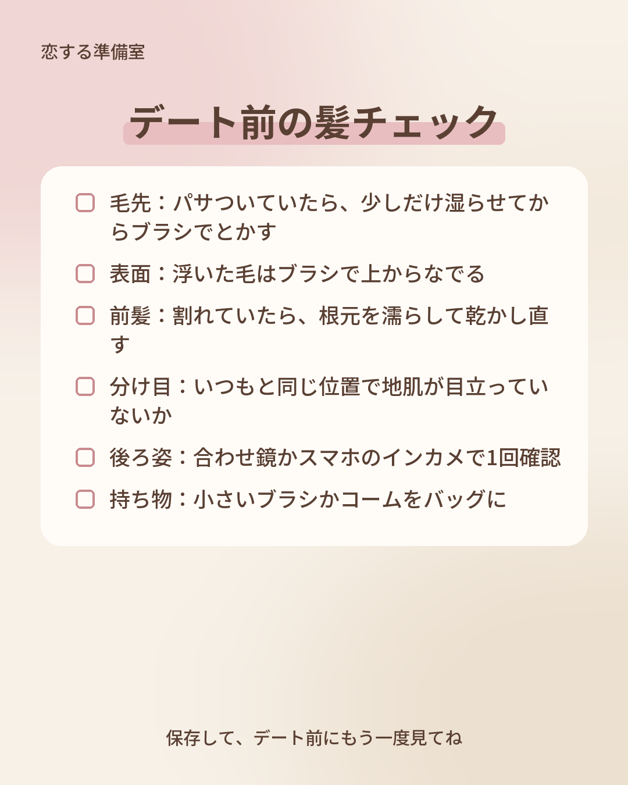
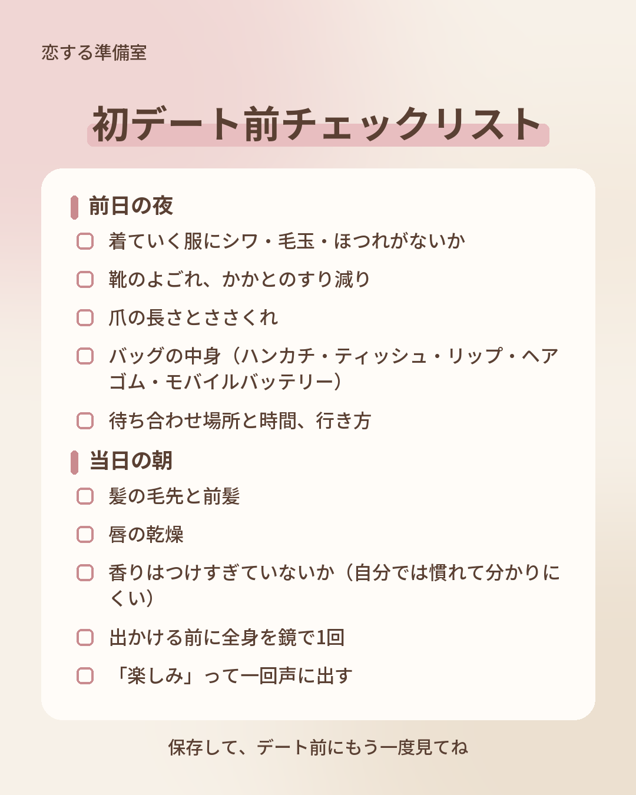

恋の準備メモ #02
デート前の髪チェック
2026-10-09
出かける5分前
- 毛先：パサついていたら、少しだけ湿らせてからブラシでとかす
- 表面：浮いた毛はブラシで上からなでる
- 前髪：割れていたら、根元を濡らして乾かし直す
- 分け目：いつもと同じ位置で地肌が目立っていないか
- 後ろ姿：合わせ鏡かスマホのインカメで1回確認
- 持ち物：小さいブラシかコームをバッグに

PR もっと手軽に整えたい人へ

ヘアウォーター（ヘアミスト）
出かける前、毛先に少しなじませてからとかす用に
楽天市場で見る
ラサーナ 海藻 ヘアエッセンス
毛先のパサつきが気になるときに、少量を毛先だけに
楽天市場で見る
Lefina 豚毛パドルブラシ
表面を上からなでて、浮いた毛を落ち着かせる用に
楽天市場で見る
恋の準備メモ #01
初デート前チェックリスト
2026-10-08
前日の夜
- 着ていく服にシワ・毛玉・ほつれがないか
- 靴のよごれ、かかとのすり減り
- 爪の長さとささくれ
- バッグの中身（ハンカチ・ティッシュ・リップ・ヘアゴム・モバイルバッテリー）
- 待ち合わせ場所と時間、行き方
当日の朝
- 髪の毛先と前髪
- 唇の乾燥
- 香りはつけすぎていないか（自分では慣れて分かりにくい）
- 出かける前に全身を鏡で1回
- 「楽しみ」って一回声に出す
